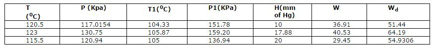

Shakshat Virtual Lab 
INDIAN INSTITUTE OF TECHNOLOGY GUWAHATI
- Theory
- Procedure
- Expt Calc
- Labview Calc
- Pre Quiz
- Download
- Simulation
- Post Expt Quiz
- Reference
- Videos
Experimental Calculation
Temperature after throttling : T1
Gauge pressure of Steam Generator : P1
Gauge Pressure before Throttling : P
Manometer difference : H
Volume of moisture collected : W
Volume of dry steam copllected after throttling: Wd
Observations:
Now let me perform calculation for 2nd reading.
1) Dryness fraction of separating calorimeter:
X1 = Wd/(W+Wd) = 0.61
2) Pressure of superheated steam: P2= 101.325 + 13.6*9.81*18/1000 = 103.73 KPa
3) Specific heat of steam: Cp = 2081.6645 J/Kg
4) Sensible heat of water at pressure P (From steam table):HW1 = 449961 Joule
5) Latent heat of wet steam entering throttling calorimeter (Steam Table):L1 = 2237790 J/Kg
6) Total heat of dry steam at pressure P2 (Steam table):H2= 2655180 Joule
7) Saturation temperature at P2 (Steam table):T2 = 99.94 0C
8) Dryness fraction from throttling calorimeter:X2 = (H2+Cp(t1-t2)-Hw1)/L1= 0.976